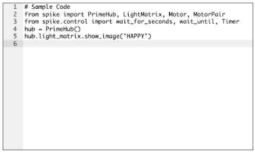

Description: A collection of example projects using a Web Browser for interacting with SPIKE Prime.
SPIKE 2SPIKE 2 examples achieved using the Service Dock for SPIKE Prime JavaScript interface created by Tufts CEEO. |
|
SPIKE 3SPIKE 3 examples achieved using the PyREPL JS web-based extension created by Gabriel Sessions. Note: SPIKE 3 still in beta so all code, protocols, examples, etc subject to change without notice. |
For the Github Repository (source code) of all these projects: https://github.com/edanahy/WebSPIKE
Bonus: For "Remote SPIKE" (controlling a remotely located SPIKE Prime over the internet) examples: https://github.com/edanahy/HelloSPIKE
 Web IDE
Description: A browser-based Python IDE for programming the SPIKE Prime.
SPIKE 2 Example
SPIKE 3 Example GamePad
Description: Use a GamePad to control the SPIKE Prime.
SPIKE 2 example not available.
SPIKE 3 Example Vampire Eyes
Description: A halloween-themed example of polling a SPIKE sensor input and moving in-browser images.
SPIKE 2 Example
SPIKE 3 Example Balloon Pop
Description: Triggering images and sound when a SPIKE Force Sensor is pushed.
SPIKE 2 Example
SPIKE 3 Example Pong
Description: Simple in-browser Pong Game controlled by SPIKE Motors.
SPIKE 2 Example
Supports 1 or 2 hubs
SPIKE 3 Example
Only supports 1 hubStar Wars
Description: Control Star Wars characters using Motor and Force Sensor.
SPIKE 2 Example
Requires 2 hubs
SPIKE 3 Example
Only supports 1 hubReaction Game
Description: A two-player "reaction game" to see who can match images the fastest.
SPIKE 2 Example
Requires 3 hubs
SPIKE 3 example not available.
Disclaimer
LEGO®, the LEGO® logo, the Brick, MINDSTORMS®, SPIKE™, and the Minifigure are trademarks of ©The LEGO® Group. All other trademarks and copyrights are the property of their respective owners. All rights reserved.
This page isn’t affiliated, authorized, or endorsed by The LEGO Group.